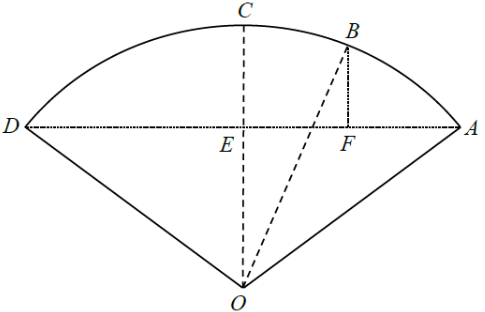

In the figure, $O$ is the centre of the sector $OABCD$. $AD$ and $OC$ are perpendicular to each other and intersect at the point $E$. $F$ is a point lying on $AD$ such that $BF$ is perpendicular to $AD$. If $AF=9$ cm, $DF=39$ cm and $OE=18$ cm, then the area of the sector $OBC$ is
A. $48\pi$ cm²
B. $75\pi$ cm²
C. $96\pi$ cm²
D. $150\pi$ cm²

Figure (original exam diagram)
STEP 1 · Use the perpendicular from the centre
$OC \perp AD$ and $O$ is the centre, so the perpendicular from the centre to the chord $AD$ bisects $AD$:
Key idea: a perpendicular line drawn from the centre of a circle to a chord always bisects that chord.
Perpendicular from Centre to Chord\(OM\perp AB\ \Rightarrow\ AM=MB=\dfrac{1}{2}AB\)Since \(OC\perp AD\) through the centre, \(E\) is the mid-point of \(AD\), so \(AE=24\ \text{cm}\).
STEP 2 · Find the radius in △OAE
In right-angled $\triangle OAE$ (right angle at $E$): $AE=24$, $OE=18$.
Area of a Sector\(\text{Area}=\dfrac{\theta}{360^\circ}\times\pi r^{2}\)With \(r=30\) and \(\angle BOC=30^\circ\), the sector is \(\dfrac{1}{12}\) of the circle: \(75\pi\ \text{cm}^{2}\).
Answer: B · $75\pi$ cm²
PRACTICESimilar question — try it yourself
Question. In a circle with centre \(O\), a chord \(AD\) of length \(40\ \text{cm}\) is \(15\ \text{cm}\) from \(O\). Find (a) the radius, (b) \(\angle AOD\) correct to \(3\) significant figures, (c) the area of the sector \(OAD\) correct to \(3\) significant figures.
Show the worked solution
Step 1. The perpendicular from \(O\) bisects \(AD\), so \(AE=20\ \text{cm}\) and \(OE=15\ \text{cm}\).